V4 Result Summary
N_on 128,987; excess 15599.7
known-background Poisson aggregate; Li-Ma is not defined for direct expectation bkg.
phi0 2.77356e-12, alpha/gamma 2.8626, beta 0.16219; chi2/ndof 102/23
Stage D active-fit warnings: 0
Cell-Selection Bias Control: Active30 Versus Drop4
This control removes cells 4, 17, 39, 43 from the original active30 list, then reruns Stage F/G using the same latest annulus-normalized Stage E signal. The purpose is to test whether these visually/diagnostically suspect cells are driving the low-Nhit excess.
| selector | cells | official obs/exp | phi0 | alpha/gamma | beta | LogPar chi2/ndof |
|---|---|---|---|---|---|---|
| active30 | 30 | 1.422 | 2.74144e-12 | 2.8394 | 0.1457 | 105.6 / 27 |
| drop4: remove 4,17,39,43 | 26 | 1.448 | 2.77356e-12 | 2.8626 | 0.16219 | 102 / 23 |
| Nhit bin | active cells | active obs/exp | drop4 cells | drop4 obs/exp | drop-active |
|---|---|---|---|---|---|
| [125,200) | 4 | 1.477 | 3 | 1.536 | 0.05864 |
| [200,300) | 4 | 1.503 | 3 | 1.516 | 0.01323 |
| [300,500) | 5 | 1.43 | 5 | 1.43 | 0 |
| [500,800) | 5 | 1.214 | 3 | 1.205 | -0.008893 |
| [800,1100) | 4 | 1.174 | 4 | 1.174 | 0 |
| [1100,2000) | 5 | 1.087 | 5 | 1.087 | 0 |
| [2000,3000) | 3 | 1.873 | 3 | 1.873 | 0 |
Official Pass5 Forward-Fold Test
This v4 test folds the official pass5 WCDA spectrum through our Stage A response, the drop4 26-cell list, cell containment, and theta exposure, then compares the predicted source counts with the latest annulus-normalized Stage E/F excess.
[125,200): 1.536x, [200,300): 1.516x, [300,500): 1.43x, [500,800): 1.205x. So the low-energy discrepancy is not removed by the latest background map alone; the next suspect should be response normalization, cell-selection normalization, or energy-migration/containment consistency. The highest-Nhit ratios are less decisive because the absolute excess is small.Total fold summary
| spectrum | cells | annnorm excess | folded expected | observed/expected | median cell ratio | cells > 1 | cells > 1.5 |
|---|---|---|---|---|---|---|---|
| official_pass5 | 26 | 15102.9 | 10432 | 1.448 | 1.315 | 24 | 10 |
| tutorial_v099 | 26 | 15102.9 | 11100.1 | 1.361 | 1.241 | 19 | 8 |
Official pass5 fold by Nhit
| Nhit bin | cells | annnorm excess | folded expected | observed/expected | median cell ratio | cells > 1 | cells > 1.5 |
|---|---|---|---|---|---|---|---|
| [125,200) | 3 | 5431.31 | 3536.11 | 1.536 | 1.567 | 3 | 2 |
| [200,300) | 3 | 4073.9 | 2687.23 | 1.516 | 1.917 | 3 | 2 |
| [300,500) | 5 | 3585.23 | 2506.72 | 1.43 | 1.451 | 5 | 2 |
| [500,800) | 3 | 1201.06 | 996.817 | 1.205 | 1.086 | 3 | 0 |
| [800,1100) | 4 | 513.515 | 437.487 | 1.174 | 1.072 | 4 | 1 |
| [1100,2000) | 5 | 281.439 | 258.819 | 1.087 | 1.117 | 4 | 1 |
| [2000,3000) | 3 | 16.4539 | 8.78594 | 1.873 | 1.613 | 2 | 2 |
Largest low-Nhit cell residuals versus official pass5
| cell | Nhit | predE | excess | official expected | obs/exp | excess - exp | pull | containment |
|---|---|---|---|---|---|---|---|---|
| 2 | [125,200) | [2.5,3) | 3656.98 | 2334.46 | 1.567 | 1322.5 | 4.768 | 0.6565 |
| 15 | [200,300) | [3,3.25) | 1312.25 | 684.588 | 1.917 | 627.66 | 7.199 | 0.7029 |
| 14 | [200,300) | [2.5,3) | 2347.26 | 1789.93 | 1.311 | 557.33 | 4.079 | 0.6497 |
| 27 | [300,500) | [3,3.25) | 1521.58 | 1048.8 | 1.451 | 472.78 | 6.961 | 0.6196 |
| 1 | [125,200) | [2,2.5) | 1117.33 | 826.616 | 1.352 | 290.71 | 1.428 | 0.5589 |
| 3 | [125,200) | [3,3.25) | 657.009 | 375.029 | 1.752 | 281.98 | 2.086 | 0.6549 |
| 16 | [200,300) | [3.25,3.5) | 414.393 | 212.711 | 1.948 | 201.68 | 2.739 | 0.6854 |
| 26 | [300,500) | [2.5,3) | 825.824 | 629.119 | 1.313 | 196.7 | 3.69 | 0.5844 |
| 28 | [300,500) | [3.25,3.5) | 800.497 | 608.005 | 1.317 | 192.49 | 3.767 | 0.7103 |
| 40 | [500,800) | [3.25,3.5) | 758.121 | 583.699 | 1.299 | 174.42 | 4.428 | 0.5906 |
| 29 | [300,500) | [3.5,3.75) | 332.046 | 164.599 | 2.017 | 167.45 | 3.899 | 0.7223 |
| 30 | [300,500) | [3.75,4.0) | 105.277 | 56.1987 | 1.873 | 49.079 | 1.199 | 0.6642 |
| 41 | [500,800) | [3.5,3.75) | 363.449 | 334.736 | 1.086 | 28.712 | 1.045 | 0.703 |
| 42 | [500,800) | [3.75,4.0) | 79.487 | 78.382 | 1.014 | 1.105 | 0.05549 | 0.7525 |
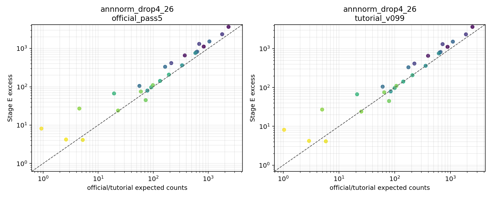
Each drop4 fit cell compares latest annnorm excess with the expected source counts from official pass5 and tutorial spectra through our response. Points above equality are cells where observed excess exceeds folded official expectation.
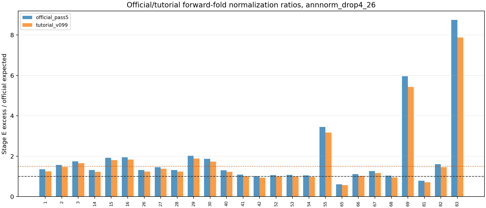
Cell-level ratio of latest annnorm excess to folded official/tutorial expected counts. Persistent low-Nhit ratios above 1 point to response/cell normalization rather than only a residual background-map problem.
Root-Cause Diagnostics
These diagnostics turn the current hypotheses into falsifiable checks: how much B_on shift would be needed, whether off-source pseudo-Crab regions show a positive residual, whether official pass5 low-energy extrapolation matters, whether Stage F closes on pseudo-data, and whether selector changes reduce the discrepancy.
Required background shift
| selector | Nhit | cells | obs/official | required delta B / B_on | required delta B |
|---|---|---|---|---|---|
| active30 | [125,200) | 4 | 1.477 | 2.403% | 1758.6 |
| active30 | [200,300) | 4 | 1.503 | 8.66% | 1398.3 |
| active30 | [300,500) | 5 | 1.43 | 21.57% | 1078.5 |
| active30 | [500,800) | 5 | 1.214 | 25.54% | 266.77 |
| active30 | [800,1100) | 4 | 1.174 | 38.5% | 76.029 |
| active30 | [1100,2000) | 5 | 1.087 | 26.13% | 22.62 |
| active30 | [2000,3000) | 3 | 1.873 | 35.59% | 7.668 |
| drop4 | [125,200) | 3 | 1.536 | 2.889% | 1895.2 |
| drop4 | [200,300) | 3 | 1.516 | 10.04% | 1386.7 |
| drop4 | [300,500) | 5 | 1.43 | 21.57% | 1078.5 |
| drop4 | [500,800) | 3 | 1.205 | 27.2% | 204.24 |
| drop4 | [800,1100) | 4 | 1.174 | 38.5% | 76.029 |
| drop4 | [1100,2000) | 5 | 1.087 | 26.13% | 22.62 |
| drop4 | [2000,3000) | 3 | 1.873 | 35.59% | 7.668 |
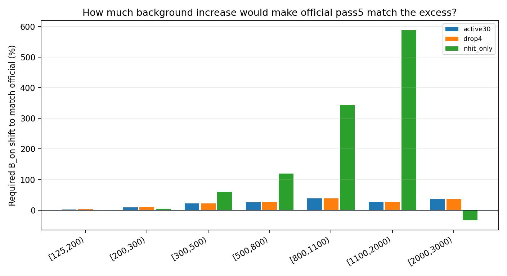
The B_on increase needed to force official pass5 folded source counts to match the observed excess. A few percent is plausible; tens of percent would require a large background failure.
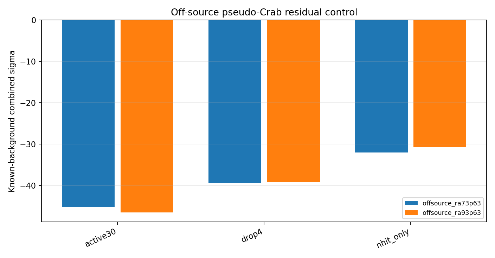
RA-shifted fake-source controls using existing off-source Stage E products. Strong negative residuals argue against a simple positive bkg-underestimate explanation.
Off-source pseudo-Crab summary
| fake source | selector | cells | excess | combined sigma | positive cells | negative cells |
|---|---|---|---|---|---|---|
| offsource_ra93p63 | active30 | 30 | -2774.4 | -46.44 | 1 | 29 |
| offsource_ra93p63 | drop4 | 26 | -2207 | -39.09 | 1 | 25 |
| offsource_ra73p63 | active30 | 30 | -2869.1 | -45.14 | 2 | 25 |
| offsource_ra73p63 | drop4 | 26 | -2416.9 | -39.4 | 2 | 21 |
Low-energy extrapolation sensitivity
| selector | variant | Nhit | cells | obs/expected |
|---|---|---|---|---|
| active30 | pass5_endpoint_extrap | [125,200) | 4 | 1.477 |
| active30 | pass5_endpoint_extrap | [200,300) | 4 | 1.503 |
| active30 | pass5_endpoint_extrap | [300,500) | 5 | 1.43 |
| active30 | pass5_cut_below_min | [125,200) | 4 | 2.475 |
| active30 | pass5_cut_below_min | [200,300) | 4 | 1.796 |
| active30 | pass5_cut_below_min | [300,500) | 5 | 1.482 |
| drop4 | pass5_endpoint_extrap | [125,200) | 3 | 1.536 |
| drop4 | pass5_endpoint_extrap | [200,300) | 3 | 1.516 |
| drop4 | pass5_endpoint_extrap | [300,500) | 5 | 1.43 |
| drop4 | pass5_cut_below_min | [125,200) | 3 | 2.635 |
| drop4 | pass5_cut_below_min | [200,300) | 3 | 1.821 |
| drop4 | pass5_cut_below_min | [300,500) | 5 | 1.482 |
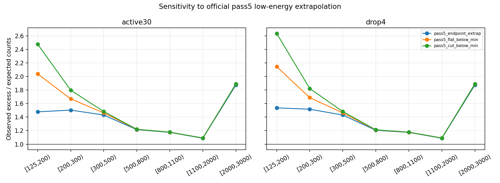
Endpoint extrapolation, flat-below-min, and cut-below-min variants. The lowest Nhit bins depend strongly on how flux below the first official pass5 point is handled.
Shown again beside the extrapolation plot to compare the background and response interpretations.
True-energy support of low-Nhit cells
| selector | cell | Nhit | predE | E50 TeV | below pass5 min | below 1 TeV |
|---|---|---|---|---|---|---|
| drop4 | 1 | [125,200) | [2,2.5) | 0.2893 | 79.38% | 98.65% |
| drop4 | 2 | [125,200) | [2.5,3) | 0.5583 | 33.73% | 83.77% |
| drop4 | 3 | [125,200) | [3,3.25) | 1.049 | 8.279% | 37.07% |
| drop4 | 14 | [200,300) | [2.5,3) | 0.644 | 23.28% | 77.31% |
| drop4 | 15 | [200,300) | [3,3.25) | 1.108 | 3.653% | 29.87% |
| drop4 | 16 | [200,300) | [3.25,3.5) | 1.745 | 4.187% | 11.56% |
Official-pass5 response closure
| selector | model | cells | chi2/ndof | phi0 | gamma/alpha | beta | max abs pull |
|---|---|---|---|---|---|---|---|
| active30 | pl | 30 | 181 / 28 | 2.04274e-12 | 2.5279 | n/a | 7.359 |
| active30 | logpar | 30 | 2.542 / 27 | 2.28077e-12 | 2.6787 | 0.12471 | 0.6934 |
| drop4 | pl | 26 | 173.5 / 24 | 2.03595e-12 | 2.528 | n/a | 7.251 |
| drop4 | logpar | 26 | 2.475 / 23 | 2.27988e-12 | 2.6781 | 0.12431 | 0.6869 |
Response / Containment Audit
This audit isolates response/aperture effects without changing the Stage E background. It compares three contracts: the current all-direction Stage A response multiplied by containment_r_opt, the same all-direction response with containment fixed to one, and the definitive aperture-conditioned Stage A response with containment fixed to one.
1.448x in the current branch, 0.9366x with all-direction response x 1, and 1.181x with aperture-conditioned response x 1. Reading the contract from expected counts, aperture-conditioned Stage A with containment_r_opt=1 predicts 1.226x the current expected counts. So the current scalar-containment branch suppresses the source expectation more than a direct aperture-conditioned response does. This supports a response/containment contract bias, but it is not a full factor-of-containment double count.| selector | cells | obs/official current | obs/official all-dir c=1 | obs/official aperture c=1 | current expected / all-dir | aperture expected / all-dir | excess | expected current | expected all-dir | expected aperture |
|---|---|---|---|---|---|---|---|---|---|---|
| all84 | 84 | 1.368 | 0.8769 | 1.123 | 0.6411 | 0.7807 | 15599.7 | 11404.1 | 17789.7 | 13889.2 |
| active30 | 30 | 1.422 | 0.9169 | 1.163 | 0.6449 | 0.7887 | 15533.6 | 10925.1 | 16940.9 | 13362.2 |
| drop4 | 26 | 1.448 | 0.9366 | 1.181 | 0.6469 | 0.793 | 15102.9 | 10432 | 16125.4 | 12787.2 |
Drop4 low-Nhit response-contract comparison
| Nhit | cells | obs/official current | obs/official all-dir c=1 | obs/official aperture c=1 | current expected / all-dir | aperture expected / all-dir | excess | B_on |
|---|---|---|---|---|---|---|---|---|
| [125,200) | 3 | 1.536 | 0.9686 | 1.24 | 0.6306 | 0.781 | 5431.3 | 65608 |
| [200,300) | 3 | 1.516 | 1.009 | 1.242 | 0.6653 | 0.8121 | 4073.9 | 13811 |
| [300,500) | 5 | 1.43 | 0.9105 | 1.147 | 0.6366 | 0.7936 | 3585.2 | 5000.8 |
| [500,800) | 3 | 1.205 | 0.7657 | 0.9747 | 0.6355 | 0.7855 | 1201.1 | 750.94 |
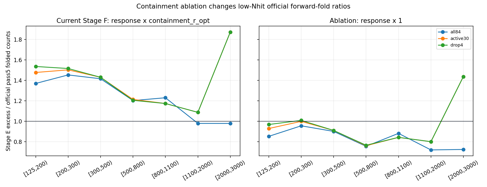
Current branch: all-direction Stage A response x containment_r_opt. Ablation: all-direction response x 1. Definitive check, when available: aperture-conditioned response x 1.
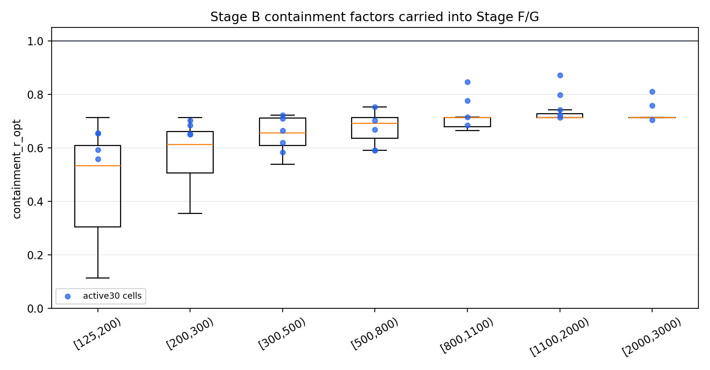
The current Stage B containment factors are typically 0.6-0.7 in low/mid Nhit. Multiplying by these factors suppresses expected counts by the same scale and raises fitted flux.
Stage F fit impact
| run | model | cells | phi0 | alpha/gamma | beta | chi2/ndof |
|---|---|---|---|---|---|---|
| v4_drop4_nominal_containment | logpar | 26 | 2.77356e-12 | 2.8626 | 0.16219 | 102 / 23 |
| v4_drop4_containment_1 | logpar | 26 | 1.83794e-12 | 2.7678 | 0.13179 | 120 / 23 |
| v4_drop4_aperture_response_containment_1 | logpar | 26 | 2.36784e-12 | 2.7615 | 0.14536 | 117.3 / 23 |
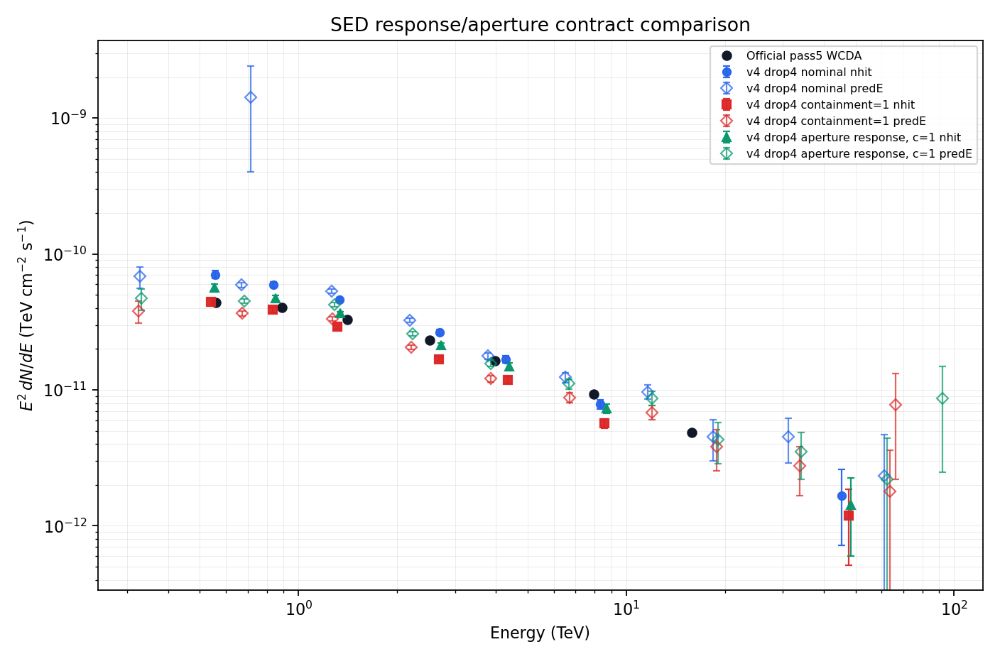
Blue is the current branch, red is all-direction response x 1, and green is aperture-conditioned response x 1 when the full Stage A rebuild is available.

Uses the aperture-conditioned Stage A branch when available; otherwise this panel shows the existing all-direction response x 1 ablation.
Largest drop4 low-Nhit cell changes
| cell | Nhit | predE | containment | ratio current | ratio all-dir c=1 | ratio aperture c=1 | delta B/B current | delta B/B all-dir c=1 | delta B/B aperture c=1 |
|---|---|---|---|---|---|---|---|---|---|
| 29 | [300,500) | [3.5,3.75) | 0.7223 | 2.017 | 1.457 | 1.711 | 22.2% | 13.8% | 18.2% |
| 16 | [200,300) | [3.25,3.5) | 0.6854 | 1.948 | 1.335 | 1.713 | 8.06% | 4.16% | 6.89% |
| 15 | [200,300) | [3,3.25) | 0.7029 | 1.917 | 1.347 | 1.71 | 20% | 10.8% | 17.3% |
| 30 | [300,500) | [3.75,4.0) | 0.6642 | 1.873 | 1.244 | 1.678 | 6.25% | 2.63% | 5.41% |
| 3 | [125,200) | [3,3.25) | 0.6549 | 1.752 | 1.147 | 1.607 | 3.2% | 0.958% | 2.82% |
| 2 | [125,200) | [2.5,3) | 0.6565 | 1.567 | 1.028 | 1.316 | 3.61% | 0.276% | 2.39% |
| 27 | [300,500) | [3,3.25) | 0.6196 | 1.451 | 0.8989 | 1.144 | 30.6% | -11.1% | 12.4% |
| 1 | [125,200) | [2,2.5) | 0.5589 | 1.352 | 0.7555 | 0.9385 | 1.44% | -1.79% | -0.363% |
| 28 | [300,500) | [3.25,3.5) | 0.7103 | 1.317 | 0.9352 | 1.181 | 21.3% | -6.12% | 13.5% |
| 26 | [300,500) | [2.5,3) | 0.5844 | 1.313 | 0.7671 | 0.9601 | 19.5% | -24.9% | -3.41% |
| 14 | [200,300) | [2.5,3) | 0.6497 | 1.311 | 0.852 | 1.034 | 6.83% | -4.99% | 0.933% |
| 40 | [500,800) | [3.25,3.5) | 0.5906 | 1.299 | 0.767 | 0.9866 | 43.9% | -58% | -2.6% |
Observed PSF Diagnostics
This diagnostic fits an empirical/effective PSF directly from observed Crab excess maps. It keeps the latest annulus-normalized Stage D background fixed, so it is a PSF/containment check rather than a new background fit or a replacement for the MC response.
26; single-cell empirical PSF fits passing the preset statistics gate: 12. Reliable-cell median sigma_obs/MC is 0.9693; median r68_obs/MC is 0.8614. Profile integration closure max absolute error is 0. Interpretation: if low-energy high-excess cells showed a coherent sigma_obs/MC or r68_obs/MC shift, spatial containment would be implicated; if not, continue prioritizing response normalization, energy migration, and cell-selection normalization.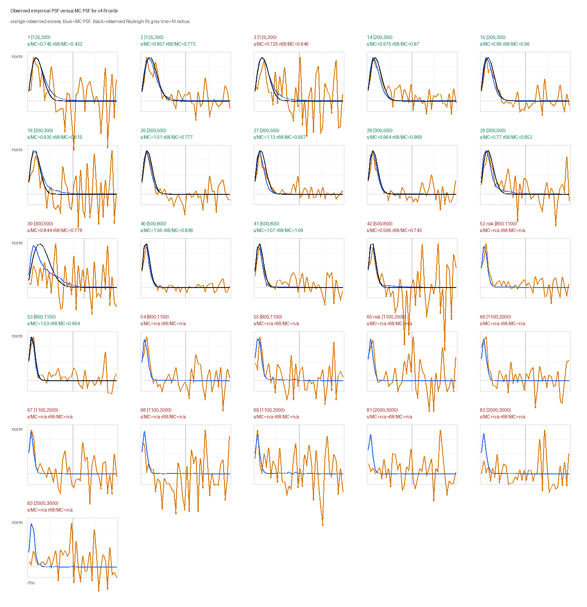
Orange curves are peak-normalized observed excess radial profiles from counts minus fixed Stage D background. Blue curves are the Stage B MC PSF profiles. Black curves are simple Rayleigh/Gaussian fits to the observed excess core. Red titles mark cells failing the statistics gate.
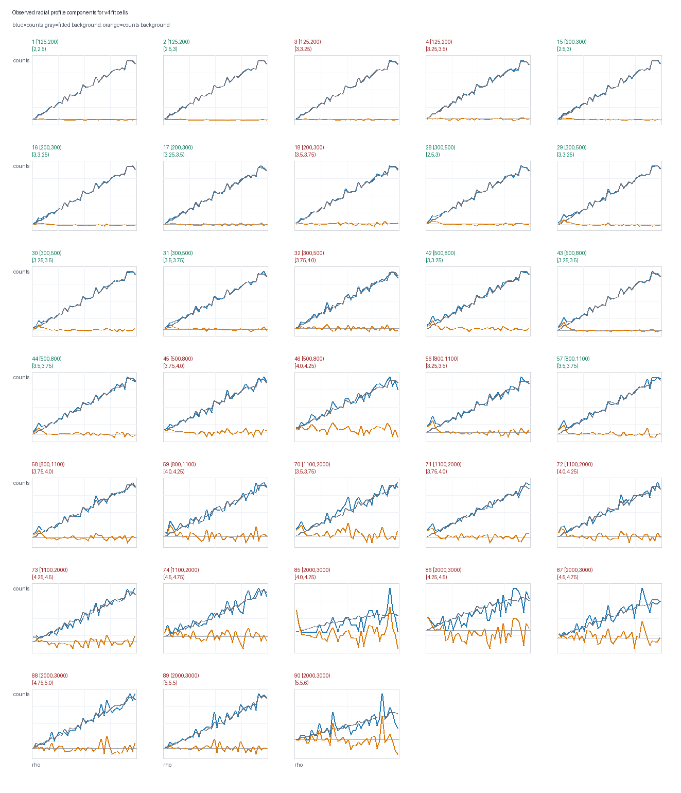
Raw radial sums for counts, fitted background, and counts-background. This checks whether the empirical PSF fit is being driven by source excess or by residual background shape.
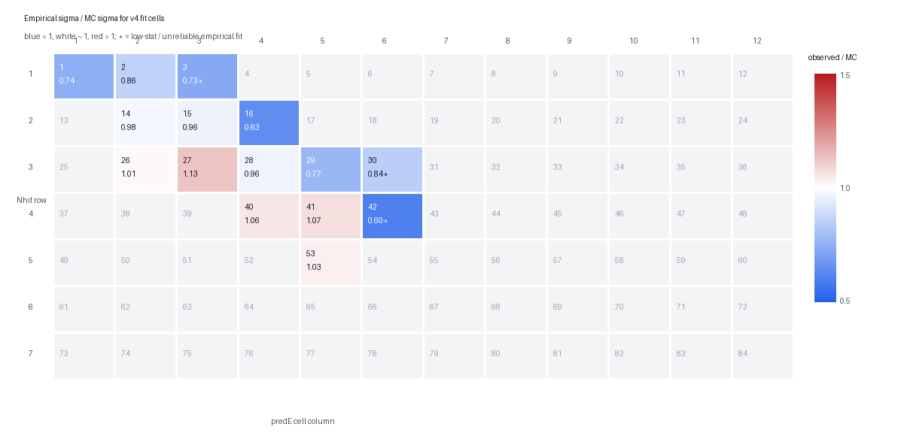
Cell-grid ratio of observed empirical Rayleigh width to Stage B MC sigma. Starred cells are plotted but not used for strong single-cell conclusions because they fail the statistics gate.
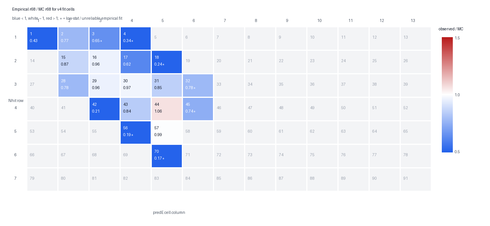
Cell-grid ratio of observed empirical r68 to Stage B MC r68. This is the containment-width comparison most directly related to aperture consistency.
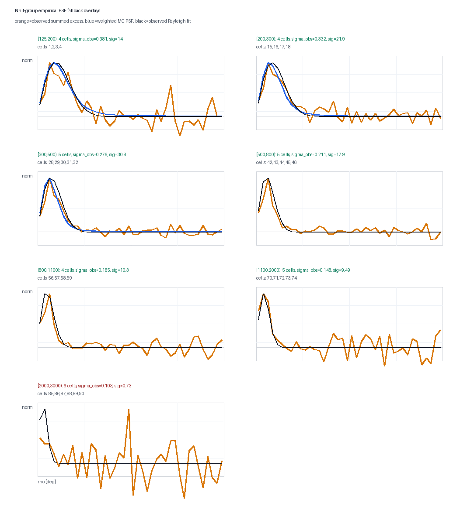
Fit-cell profiles summed by Nhit bin. This grouped fallback is the safer view when individual high-Nhit cells have too few observed counts for stable PSF fitting.
Single-cell empirical PSF reliability
| cell | Nhit | predE | N_on | B_on | excess | sig | gate | sigma/MC | r68/MC | profile RMS |
|---|---|---|---|---|---|---|---|---|---|---|
| 1 | [125,200) | [2,2.5) | 21284 | 20166.7 | 1117.3 | 5.488 | reliable | 0.7445 | 0.4318 | 0.3424 |
| 2 | [125,200) | [2.5,3) | 40293 | 36636 | 3657 | 13.18 | reliable | 0.8572 | 0.7735 | 0.1682 |
| 3 | [125,200) | [3,3.25) | 9462 | 8804.99 | 657.01 | 4.861 | significance_lt_5 | 0.7255 | 0.6462 | 0.3445 |
| 14 | [200,300) | [2.5,3) | 10510 | 8162.74 | 2347.3 | 17.18 | reliable | 0.9751 | 0.8703 | 0.1967 |
| 15 | [200,300) | [3,3.25) | 4457 | 3144.75 | 1312.2 | 15.05 | reliable | 0.9598 | 0.9602 | 0.1548 |
| 16 | [200,300) | [3.25,3.5) | 2918 | 2503.61 | 414.39 | 5.628 | reliable | 0.6349 | 0.6155 | 0.3302 |
| 26 | [300,500) | [2.5,3) | 1834 | 1008.18 | 825.82 | 15.49 | reliable | 1.012 | 0.7769 | 0.1655 |
| 27 | [300,500) | [3,3.25) | 3067 | 1545.42 | 1521.6 | 22.4 | reliable | 1.129 | 0.9568 | 0.1484 |
| 28 | [300,500) | [3.25,3.5) | 1706 | 905.503 | 800.5 | 15.66 | reliable | 0.9635 | 0.9694 | 0.1173 |
| 29 | [300,500) | [3.5,3.75) | 1088 | 755.954 | 332.05 | 7.733 | reliable | 0.7703 | 0.8524 | 0.2655 |
| 30 | [300,500) | [3.75,4.0) | 891 | 785.723 | 105.28 | 2.571 | significance_lt_5 | 0.8443 | 0.7763 | 0.4444 |
| 40 | [500,800) | [3.25,3.5) | 1155 | 396.879 | 758.12 | 19.24 | reliable | 1.055 | 0.8378 | 0.08559 |
| 41 | [500,800) | [3.5,3.75) | 559 | 195.551 | 363.45 | 13.23 | reliable | 1.072 | 1.064 | 0.1488 |
| 42 | [500,800) | [3.75,4.0) | 238 | 158.513 | 79.487 | 3.992 | excess_lt_100;significance_lt_5 | 0.5955 | 0.7431 | 0.4545 |
| 52 | [800,1100) | [3.25,3.5) | 174 | 31.844 | 142.16 | 9.908 | N_on_lt_200 | n/a | n/a | 0.1252 |
| 53 | [800,1100) | [3.5,3.75) | 280 | 72.5481 | 207.45 | 11.05 | reliable | 1.033 | 0.994 | 0.1152 |
| 54 | [800,1100) | [3.75,4.0) | 152 | 55.0288 | 96.971 | 6.739 | N_on_lt_200;excess_lt_100 | n/a | n/a | 0.1707 |
| 55 | [800,1100) | [4.0,4.25) | 105 | 38.0638 | 66.936 | 5.596 | N_on_lt_200;excess_lt_100 | n/a | n/a | 0.3221 |
| 65 | [1100,2000) | [3.5,3.75) | 54 | 9.07665 | 44.923 | 5.656 | N_on_lt_200;excess_lt_100 | n/a | n/a | 0.2347 |
| 66 | [1100,2000) | [3.75,4.0) | 131 | 20.7068 | 110.29 | 8.955 | N_on_lt_200 | n/a | n/a | 0.2058 |
| 67 | [1100,2000) | [4.0,4.25) | 93 | 17.8374 | 75.163 | 7.139 | N_on_lt_200;excess_lt_100 | n/a | n/a | 0.2321 |
| 68 | [1100,2000) | [4.25,4.5) | 44 | 20.0113 | 23.989 | 2.998 | N_on_lt_200;excess_lt_100;significance_lt_5 | n/a | n/a | 0.4309 |
| 69 | [1100,2000) | [4.5,4.75) | 46 | 18.9287 | 27.071 | 3.36 | N_on_lt_200;excess_lt_100;significance_lt_5 | n/a | n/a | 0.3386 |
| 81 | [2000,3000) | [4.5,4.75) | 6 | 1.88901 | 4.111 | 1.464 | N_on_lt_200;excess_lt_100;significance_lt_5 | n/a | n/a | 0.33 |
| 82 | [2000,3000) | [4.75,5.0) | 11 | 6.79258 | 4.2074 | 0.9975 | N_on_lt_200;excess_lt_100;significance_lt_5 | n/a | n/a | 0.2659 |
| 83 | [2000,3000) | [5,6) | 21 | 12.8645 | 8.1355 | 1.398 | N_on_lt_200;excess_lt_100;significance_lt_5 | n/a | n/a | 0.3878 |
Nhit-group fallback fits
| Nhit | cells | cell ids | N_on | B_on | excess | sig | gate | sigma_obs | r68_obs |
|---|---|---|---|---|---|---|---|---|---|
| [125,200) | 3 | 1,2,3 | 71039 | 65607.7 | 5431.3 | 14.69 | reliable | 0.3847 | 0.5807 |
| [200,300) | 3 | 14,15,16 | 17885 | 13811.1 | 4073.9 | 22.88 | reliable | 0.3322 | 0.5015 |
| [300,500) | 5 | 26,27,28,29,30 | 8586 | 5000.77 | 3585.2 | 30.76 | reliable | 0.2764 | 0.4173 |
| [500,800) | 3 | 40,41,42 | 1952 | 750.943 | 1201.1 | 23.1 | reliable | 0.2108 | 0.3182 |
| [800,1100) | 4 | 52,53,54,55 | 711 | 197.485 | 513.52 | 17.04 | reliable | 0.1878 | 0.2835 |
| [1100,2000) | 5 | 65,66,67,68,69 | 368 | 86.5609 | 281.44 | 13.2 | reliable | 0.1452 | 0.2191 |
| [2000,3000) | 3 | 81,82,83 | 38 | 21.5461 | 16.454 | 2.132 | N_on_lt_200;excess_lt_100;significance_lt_5 | 0.178 | 0.2687 |
Low-stat and PSF-risk notes
Cells failing the single-cell gate are kept in the plots but should not drive a PSF conclusion by themselves. Historical PSF-risk cells in the current v4 selector: cell 52: N_on_lt_200, cell 65: N_on_lt_200;excess_lt_100.
Because this is an observed effective PSF, it contains the true Crab spectrum, energy migration, zenith distribution, cell selection, and residual background-model effects. It should not be used to replace MC effective area or energy dispersion directly.
R68 Empirical Aperture Control
This control replaces the analytic optimum aperture r_opt = 1.58*sigma with the MC empirical r68 radius for every candidate cell. Stage D integrates the fitted 2D background inside the same r68 aperture, Stage E rescans observation events to recompute N_on, and Stage F/G use containment_r_opt = 0.68.
0.9622x over the full candidate grid. For the first two Nhit SED points, r68/nominal flux ratios are n/a and n/a. If these ratios are well below one, the high low-energy flux was partly driven by the previous aperture/containment convention; if they stay near one, the problem is not solved by changing aperture alone.| branch | N_on | B_on | excess | formal sigma |
|---|---|---|---|---|
| nominal r_opt=1.58*sigma | 1.2898700e+05 | 1.1338729e+05 | 15599.71 | 45.321 |
| empirical r68 aperture | 2.0235500e+05 | 1.8761849e+05 | 14736.51 | 33.59 |
| branch | cells | model | phi0 | alpha/gamma | beta | chi2/ndof |
|---|---|---|---|---|---|---|
| nominal r_opt=1.58*sigma | 26 | logpar | 2.77356e-12 | 2.8626 | 0.16219 | 102 / 23 |
| empirical r68 aperture | 26 | logpar | 2.75078e-12 | 2.8531 | 0.1423 | 134.8 / 23 |
Nhit SED point movement
| Nhit bin | cells | E nominal | E2dN/dE nominal | E r68 | E2dN/dE r68 | r68/nominal |
|---|---|---|---|---|---|---|
| [125,200) | 3 | 0.5558 | n/a | 0.5309 | n/a | n/a |
| [200,300) | 3 | 0.8379 | n/a | 0.8184 | n/a | n/a |
| [300,500) | 5 | 1.334 | n/a | 1.287 | n/a | n/a |
| [500,800) | 3 | 2.691 | n/a | 2.637 | n/a | n/a |
| [800,1100) | 4 | 4.293 | n/a | 4.278 | n/a | n/a |
| [1100,2000) | 5 | 8.332 | n/a | 8.349 | n/a | n/a |
| [2000,3000) | 3 | 45.45 | n/a | 46.16 | n/a | n/a |
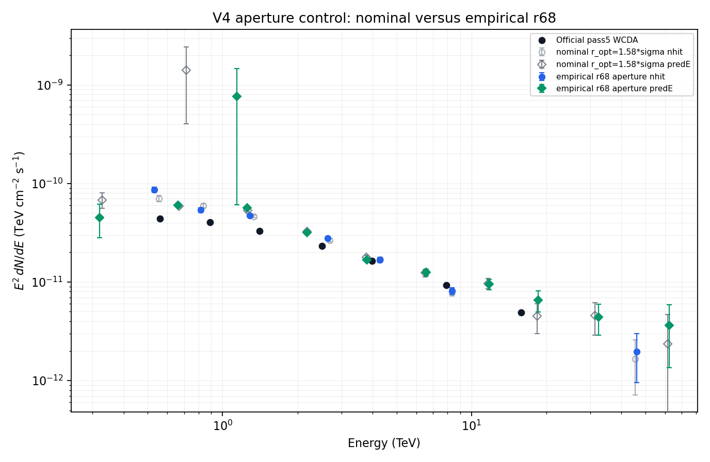
Grey open markers are the current nominal v4 drop4 points. Blue/green markers are the empirical r68-aperture rerun. Black points are official pass5.

Stage G rerun after replacing the on-region aperture and response containment by the MC empirical r68 contract.
Current A-G Inputs
| Stage | current role | run / type | metadata |
|---|---|---|---|
| A | 2D response | primary_thrown_response | apply/output/stage_a_v3_candidate/response_2d_v3_candidate_metadata.json |
| B | direct own-cell PSF for 39/52/65 | v3_directpsf_from_psfborrow | apply/output/stage_b_v3_candidate_directpsf/runs/v3_directpsf_from_psfborrow/psf_v3_candidate_metadata.json |
| C | observation event reduction | v3_stage_c_slurm_42024 | apply/output/stage_c_v3_candidate/runs/v3_stage_c_slurm_42024/obs_events_metadata.json |
| D | annulus-normalized 2D background | v3_stage_d_annnorm_from_directpsf | apply/output/stage_d_v3_candidate_annnorm/runs/v3_stage_d_annnorm_from_directpsf/background_v3_candidate_annnorm_metadata.json |
| E | on-region excess from latest bkg | v3_stage_e_annnorm_from_directpsf | apply/output/stage_e_v3_candidate_annnorm/runs/v3_stage_e_annnorm_from_directpsf/signal_v3_candidate_annnorm_metadata.json |
| F | global forward-folding fit | v4_stage_f_annnorm_drop_cells_4_17_39_43 | apply/output/stage_f_v3_baseline_annnorm/runs/v3_stage_f_annnorm_from_directpsf/fit_v3_baseline_annnorm_metadata.json |
| G | diagnostic SED points | v4_stage_g_annnorm_drop_cells_4_17_39_43 | apply/output/stage_g_v3_baseline_annnorm/runs/v3_stage_g_annnorm_from_directpsf/sed_points_v3_baseline_annnorm_metadata.json |
Fit Cell Definition
The tested cell set starts from the active30 v3_baseline_psfborrow selector but excludes cells 4, 17, 39, 43. Cells 52 and 65 remain included through neighbor PSF borrowing; cell 39 is excluded in this control.
Included cell ids: 1, 2, 3, 14, 15, 16, 26, 27, 28, 29, 30, 40, 41, 42, 52, 53, 54, 55, 65, 66, 67, 68, 69, 81, 82, 83
Fit-cell selector table
| cell | Nhit | predE | MC count | ridge frac. | PSF | selection reason |
|---|---|---|---|---|---|---|
| 1 | [125,200) | [2,2.5) | 186,591 | 0.446 | native | central99 MC-occupancy-ridge prefit cell |
| 2 | [125,200) | [2.5,3) | 418,034 | 1 | native | central99 MC-occupancy-ridge prefit cell |
| 3 | [125,200) | [3,3.25) | 88,759 | 0.212 | native | central99 MC-occupancy-ridge prefit cell |
| 14 | [200,300) | [2.5,3) | 255,726 | 1 | native | central99 MC-occupancy-ridge prefit cell |
| 15 | [200,300) | [3,3.25) | 122,642 | 0.48 | native | central99 MC-occupancy-ridge prefit cell |
| 16 | [200,300) | [3.25,3.5) | 55,093 | 0.215 | native | central99 MC-occupancy-ridge prefit cell |
| 26 | [300,500) | [2.5,3) | 80,182 | 0.529 | native | central99 MC-occupancy-ridge prefit cell |
| 27 | [300,500) | [3,3.25) | 151,506 | 1 | native | central99 MC-occupancy-ridge prefit cell |
| 28 | [300,500) | [3.25,3.5) | 112,141 | 0.74 | native | central99 MC-occupancy-ridge prefit cell |
| 29 | [300,500) | [3.5,3.75) | 46,983 | 0.31 | native | central99 MC-occupancy-ridge prefit cell |
| 30 | [300,500) | [3.75,4.0) | 20,906 | 0.138 | native | central99 MC-occupancy-ridge prefit cell |
| 40 | [500,800) | [3.25,3.5) | 89,513 | 1 | native | central99 MC-occupancy-ridge prefit cell |
| 41 | [500,800) | [3.5,3.75) | 68,604 | 0.766 | native | central99 MC-occupancy-ridge prefit cell |
| 42 | [500,800) | [3.75,4.0) | 26,703 | 0.298 | native | central99 MC-occupancy-ridge prefit cell |
| 52 | [800,1100) | [3.25,3.5) | 15,783 | 0.481 | borrowed from 53,54 | central99 MC-occupancy-ridge prefit cell; PSF borrowed for v3_psfborrow systematic from 53,54 |
| 53 | [800,1100) | [3.5,3.75) | 32,787 | 1 | native | central99 MC-occupancy-ridge prefit cell |
| 54 | [800,1100) | [3.75,4.0) | 22,615 | 0.69 | native | central99 MC-occupancy-ridge prefit cell |
| 55 | [800,1100) | [4.0,4.25) | 9,020 | 0.275 | native | central99 MC-occupancy-ridge prefit cell |
| 65 | [1100,2000) | [3.5,3.75) | 10,960 | 0.457 | borrowed from 66,67 | central99 MC-occupancy-ridge prefit cell; PSF borrowed for v3_psfborrow systematic from 66,67 |
| 66 | [1100,2000) | [3.75,4.0) | 23,726 | 0.989 | native | central99 MC-occupancy-ridge prefit cell |
| 67 | [1100,2000) | [4.0,4.25) | 23,998 | 1 | native | central99 MC-occupancy-ridge prefit cell |
| 68 | [1100,2000) | [4.25,4.5) | 13,380 | 0.558 | native | central99 MC-occupancy-ridge prefit cell |
| 69 | [1100,2000) | [4.5,4.75) | 5,650 | 0.235 | native | central99 MC-occupancy-ridge prefit cell |
| 81 | [2000,3000) | [4.5,4.75) | 5,515 | 0.762 | native | central99 MC-occupancy-ridge prefit cell |
| 82 | [2000,3000) | [4.75,5.0) | 5,332 | 0.737 | native | central99 MC-occupancy-ridge prefit cell |
| 83 | [2000,3000) | [5,6) | 7,233 | 1 | native | central99 MC-occupancy-ridge prefit cell |
Stage B / PSF Diagnostics
These Stage B diagnostics are MC-side PSF provenance for the current v4 drop4 fit. The radial profile grid below keeps the nominal full candidate grid, but panels with a pale green background are the cells that actually enter the current v4 Stage F/G fit.
1, 2, 3, 14, 15, 16, 26, 27, 28, 29, 30, 40, 41, 42, 52, 53, 54, 55, 65, 66, 67, 68, 69, 81, 82, 83.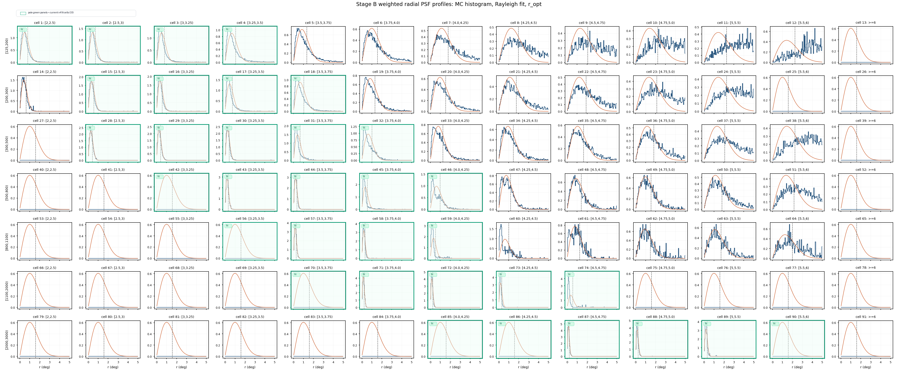
Pale green panels are the current v4 drop4 fit cells. Non-highlighted panels remain visible as candidate-grid PSF context.
Candidate-grid Rayleigh-core PSF width sigma in degrees. Smaller sigma means a narrower reconstructed Crab response for that cell.
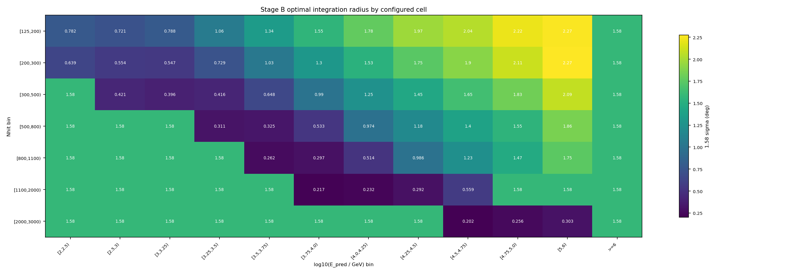
Candidate-grid aperture radius used for the on-region integration. In v3/v4 this is tied to the fitted PSF width, approximately r_opt = 1.58 * sigma.
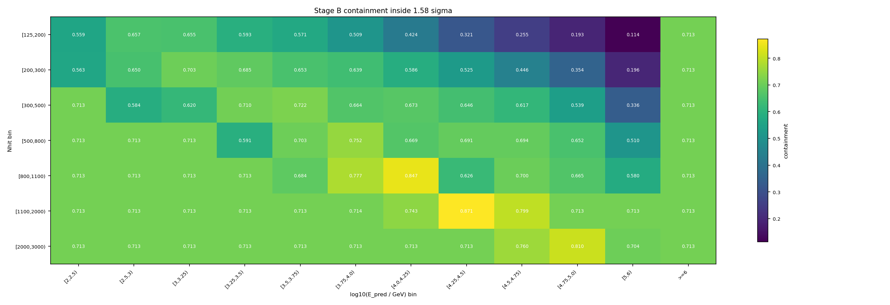
Fraction of the cell PSF contained inside r_opt. Low containment or warnings indicate broad tails or fragile low-stat PSF behavior.
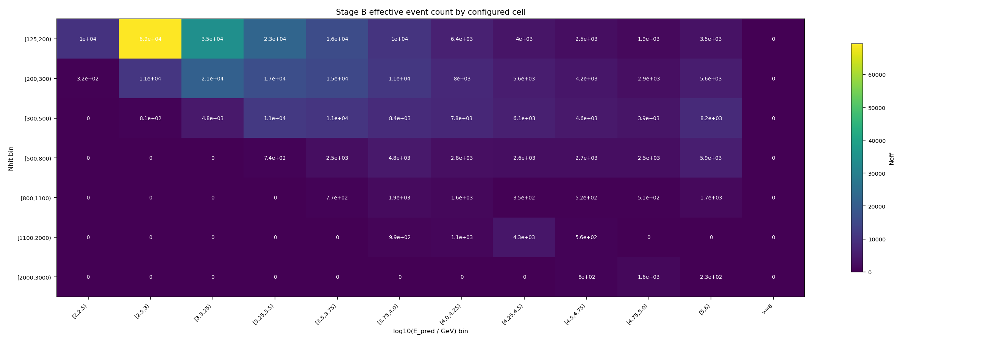
Effective MC statistics after Crab-declination theta reweighting, Neff = (sum w)^2 / sum(w^2). Low Neff means the PSF is dominated by a small number of weighted MC events.
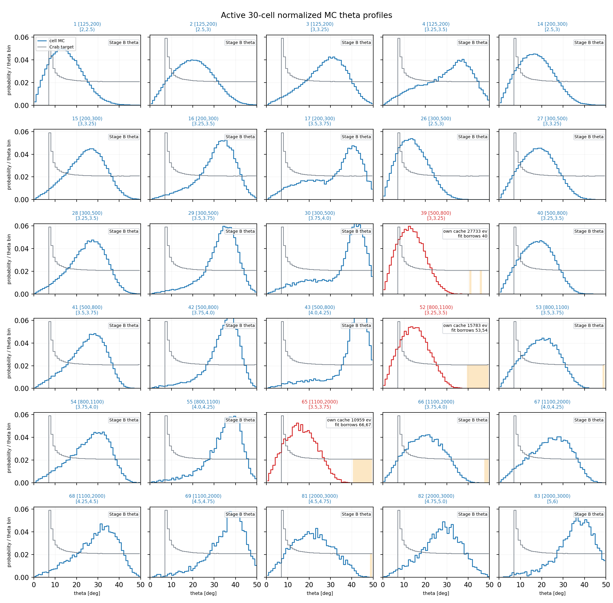
MC theta support after the Stage B cuts; gray is the Crab-visible theta target used for reweighting. This remains useful as PSF-support provenance for the v4 selector.
Current v4 fit-cell PSF table
| cell | Nhit | predE | sigma deg | r_opt deg | containment | Neff | missing mass | PSF source | orig missing |
|---|---|---|---|---|---|---|---|---|---|
| 1 | [125,200) | [2,2.5) | 0.4947 | 0.7816 | 0.5589 | 10049 | 0 | direct Stage B PSF | n/a |
| 2 | [125,200) | [2.5,3) | 0.4564 | 0.7211 | 0.6565 | 69269 | 0 | direct Stage B PSF | n/a |
| 3 | [125,200) | [3,3.25) | 0.4986 | 0.7878 | 0.6549 | 34634 | 0 | direct Stage B PSF | n/a |
| 14 | [200,300) | [2.5,3) | 0.3508 | 0.5542 | 0.6497 | 10948 | 0 | direct Stage B PSF | n/a |
| 15 | [200,300) | [3,3.25) | 0.3461 | 0.5469 | 0.7029 | 21172 | 0 | direct Stage B PSF | n/a |
| 16 | [200,300) | [3.25,3.5) | 0.4612 | 0.7287 | 0.6854 | 16719 | 0 | direct Stage B PSF | n/a |
| 26 | [300,500) | [2.5,3) | 0.2667 | 0.4214 | 0.5844 | 807.09 | 0.02083 | direct Stage B PSF | n/a |
| 27 | [300,500) | [3,3.25) | 0.2507 | 0.3961 | 0.6196 | 4796.2 | 0 | direct Stage B PSF | n/a |
| 28 | [300,500) | [3.25,3.5) | 0.263 | 0.4156 | 0.7103 | 11408 | 0 | direct Stage B PSF | n/a |
| 29 | [300,500) | [3.5,3.75) | 0.41 | 0.6477 | 0.7223 | 10705 | 0 | direct Stage B PSF | n/a |
| 30 | [300,500) | [3.75,4.0) | 0.6266 | 0.9901 | 0.6642 | 8443.2 | 0 | direct Stage B PSF | n/a |
| 40 | [500,800) | [3.25,3.5) | 0.1967 | 0.3108 | 0.5906 | 740.47 | 0 | direct Stage B PSF | n/a |
| 41 | [500,800) | [3.5,3.75) | 0.2059 | 0.3253 | 0.703 | 2505.2 | 0 | direct Stage B PSF | n/a |
| 42 | [500,800) | [3.75,4.0) | 0.3374 | 0.5331 | 0.7525 | 4809.2 | 0 | direct Stage B PSF | n/a |
| 52 | [800,1100) | [3.25,3.5) | 0.1621 | 0.2562 | 0.6979 | 694.45 | 0.22835 | direct own-cell PSF; previous 53,54 | n/a |
| 53 | [800,1100) | [3.5,3.75) | 0.166 | 0.2622 | 0.6843 | 771.75 | 0.083091 | direct Stage B PSF | n/a |
| 54 | [800,1100) | [3.75,4.0) | 0.1879 | 0.2969 | 0.7769 | 1898.8 | 0 | direct Stage B PSF | n/a |
| 55 | [800,1100) | [4.0,4.25) | 0.3254 | 0.5141 | 0.8465 | 1581 | 0 | direct Stage B PSF | n/a |
| 65 | [1100,2000) | [3.5,3.75) | 0.1354 | 0.2139 | 0.7079 | 663.82 | 0.20758 | direct own-cell PSF; previous 66,67 | n/a |
| 66 | [1100,2000) | [3.75,4.0) | 0.1375 | 0.2172 | 0.7137 | 994.24 | 0.062391 | direct Stage B PSF | n/a |
| 67 | [1100,2000) | [4.0,4.25) | 0.1471 | 0.2324 | 0.7426 | 1111.7 | 0 | direct Stage B PSF | n/a |
| 68 | [1100,2000) | [4.25,4.5) | 0.1851 | 0.2924 | 0.8715 | 4260.3 | 0 | direct Stage B PSF | n/a |
| 69 | [1100,2000) | [4.5,4.75) | 0.3536 | 0.5587 | 0.7992 | 556.91 | 0 | direct Stage B PSF | n/a |
| 81 | [2000,3000) | [4.5,4.75) | 0.1281 | 0.2024 | 0.7595 | 797.56 | 0.041594 | direct Stage B PSF | n/a |
| 82 | [2000,3000) | [4.75,5.0) | 0.162 | 0.256 | 0.8102 | 1604.3 | 0 | direct Stage B PSF | n/a |
| 83 | [2000,3000) | [5,6) | 0.192 | 0.3034 | 0.7039 | 225.71 | 0 | direct Stage B PSF | n/a |
Stage D: Latest 2D Background
The current report is rebuilt around the annulus-normalized quadratic 2D background. The quadratic fit keeps the local shape from the training ring, then forces the total fitted background in that ring to match the observed annulus counts for each cell.
| item | definition |
|---|---|
| ROI | rho < 6 deg around Crab tangent-plane center |
| training ring | inner radius is max(1.5 deg, source mask); width 2 deg; capped by 4.5 deg |
| raw surface | B_raw(x,y) = c0 + c1*x + c2*y + c3*x^2 + c4*x*y + c5*y^2 |
| positivity | B_pos(x,y) = max(B_raw(x,y), 0) |
| annulus normalization | scale_b = sum_annulus(counts_b) / sum_annulus(B_pos,b) |
| final bkg | B_final,b(x,y) = scale_b * B_pos,b(x,y); B_on,b is the integral over the PSF on aperture |

Observed counts in the 6 deg Crab ROI for the candidate grid.

Grey/colored ring pixels show where the 2D surface is trained; the central Crab/source mask is excluded from training.

The final annulus-normalized 2D background map B_final(x,y) for each cell.

Training-ring residuals after the surface fit.

The fitted background extrapolated into the Crab core/on region used for B_on.

Counts map after subtracting the annulus-normalized fitted 2D background.
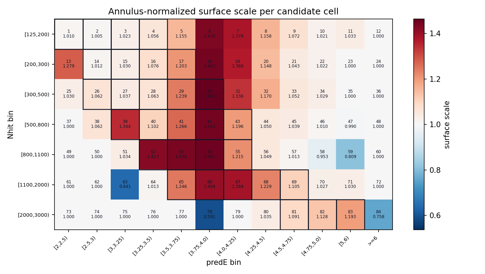
Per-cell multiplicative scale forcing the annulus-integrated fitted surface to match annulus observed counts.
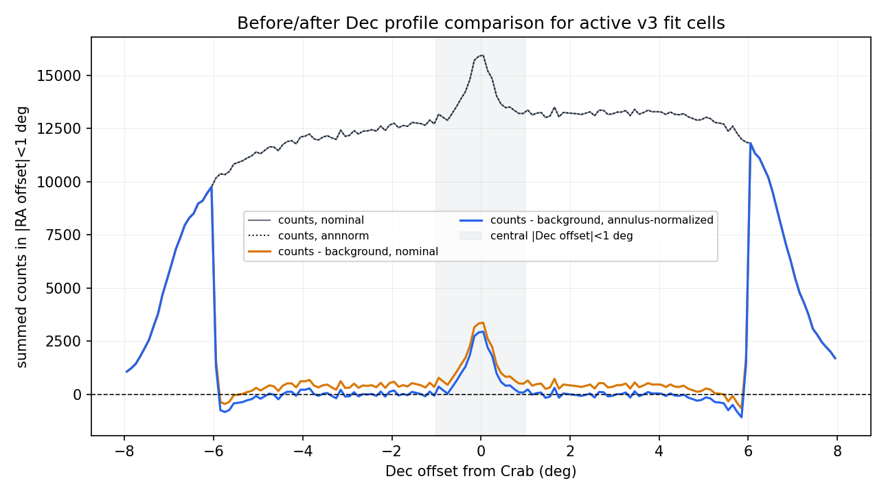
Unnormalized Dec-offset profiles summed over the active fit cells.
Profile Diagnostics: Latest Background
These diagnostics are rebuilt from the latest annulus-normalized Stage D maps, not copied from the old v3 report. Counts profiles use counts_map; excess profiles use the current excess_map = counts_map - B_final. Each 1D profile is divided by its own positive peak so that widths and residual asymmetries can be compared across cells.
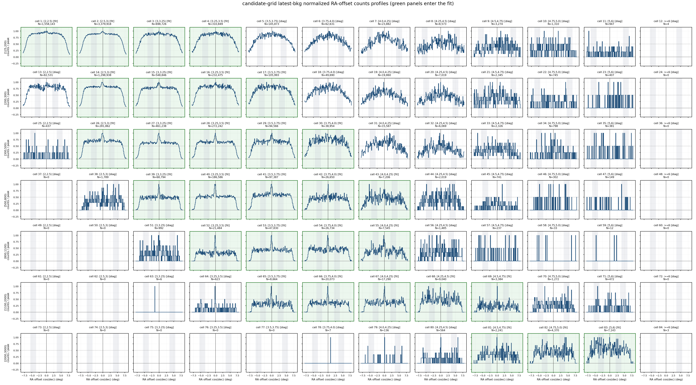
For every candidate cell, counts are summed in a |Dec offset|<1 deg band and normalized by that cell's own peak. Green panels are the current 30 fit cells; light gray spans mark that cell's Stage D annulus-training radii projected onto the RA-offset axis.
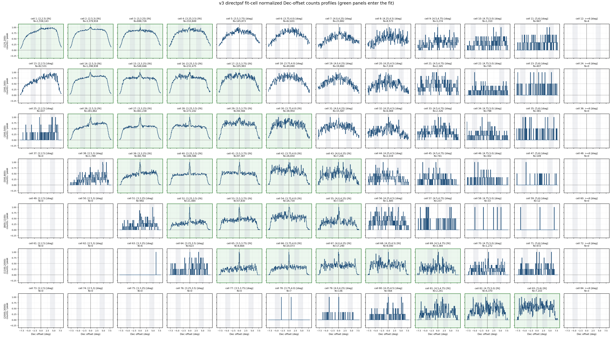
For every candidate cell, counts are summed in a |RA offset cos(dec)|<1 deg band and normalized by that cell's own peak. The same annulus-ring spans are shown in gray.
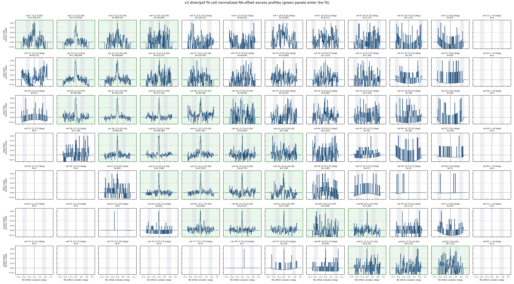
Same RA projection after subtracting the latest annulus-normalized fitted 2D background. This checks whether the Crab-centered excess remains narrow and centered after the new bkg method.
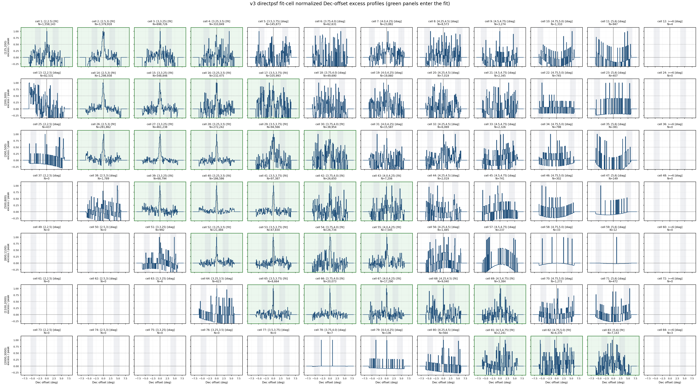
Same Dec projection after subtracting the latest annulus-normalized fitted 2D background. This is the direct Dec-direction residual check for the new bkg method.
Stage E: Current Excess
| N_on | B_on | excess | sqrt(N_on+B_on) | formal sigma | note |
|---|---|---|---|---|---|
| 128,987 | 1.133873e+05 | 15599.7 | 492.32 | 45.321 | direct expectation background; no Li-Ma alpha/N_off |

Per-cell N_on and B_on entering the latest v3 fit.

Per-cell N_on - B_on using the latest annulus-normalized background.

Per-cell known-background Poisson diagnostic significance.

Ratio view to expose local under/over-background behavior.
Stage F: Current Forward-Folding Fit
The preferred spectrum is selected by the Stage F metadata. For the latest bkg branch, LogPar remains preferred over PL under conservative sqrt(N_on+B_on) errors.
| fit | model | phi0 | gamma/alpha | beta | chi2 | ndof | chi2/ndof | |
|---|---|---|---|---|---|---|---|---|
| pl_conservative | pl | 2.44832e-12 | 2.7064 | n/a | 147.66 | 24 | 6.153 | |
| logpar_conservative | logpar | 2.77356e-12 | 2.8626 | 0.16219 | 101.97 | 23 | 4.433 | preferred |
| pl_sqrt_n | pl | 2.48264e-12 | 2.6875 | n/a | 226.67 | 24 | 9.445 | |
| logpar_sqrt_n | logpar | 2.81928e-12 | 2.8676 | 0.17384 | 149.78 | 23 | 6.512 |

Drop4 annnorm fit-cell excess compared with the preferred spectral model expectation.

Per-cell residual pull under the current preferred LogPar fit.

Zenith-angle exposure diagnostic used by the forward-folding response.

Power-law residual grid kept as a model-comparison diagnostic.
Stage G: Current SED Points
Stage G fixes the Stage F preferred spectral shape and refits only one normalization per diagnostic energy grouping. The final figure overlays official/tutorial WCDA references and the old v3 psfborrow points for visual comparison.
| group | bin | cells | Eeff TeV | E2 dN/dE | err | chi2/ndof |
|---|---|---|---|---|---|---|
| nhit | [125,200) | 1,2,3 | 0.5558 | 7.05025e-11 | 4.6902e-12 | 0.815 |
| nhit | [200,300) | 14,15,16 | 0.8379 | 5.94338e-11 | 2.5872e-12 | 12.8 |
| nhit | [300,500) | 26,27,28,29,30 | 1.334 | 4.63695e-11 | 1.4382e-12 | 3.53 |
| nhit | [500,800) | 40,41,42 | 2.691 | 2.66537e-11 | 1.1270e-12 | 0.988 |
| nhit | [800,1100) | 52,53,54,55 | 4.293 | 1.68806e-11 | 1.0105e-12 | 5.97 |
| nhit | [1100,2000) | 65,66,67,68,69 | 8.332 | 7.85729e-12 | 6.4017e-13 | 8.2 |
| nhit | [2000,3000) | 81,82,83 | 45.45 | 1.65780e-12 | 9.4051e-13 | 0.992 |
| predE | [2,2.5) | 1 | 0.3278 | 6.82362e-11 | 1.2434e-11 | n/a |
| predE | [2.5,3) | 2,14,26 | 0.669 | 5.90717e-11 | 2.2236e-12 | 1.55 |
| predE | [3,3.25) | 3,15,27 | 1.26 | 5.34513e-11 | 1.9624e-12 | 5.11 |
| predE | [3.25,3.5) | 16,28,40,52 | 2.179 | 3.24696e-11 | 1.1936e-12 | 1.86 |
| predE | [3.5,3.75) | 29,41,53,65 | 3.783 | 1.77969e-11 | 9.3013e-13 | 7.61 |
| predE | [3.75,4.0) | 30,42,54,66 | 6.52 | 1.23559e-11 | 1.0223e-12 | 0.69 |
| predE | [4.0,4.25) | 55,67 | 11.64 | 9.69234e-12 | 1.1401e-12 | 10 |
| predE | [4.25,4.5) | 68 | 18.35 | 4.51662e-12 | 1.5064e-12 | n/a |
| predE | [4.5,4.75) | 69,81 | 31.27 | 4.54788e-12 | 1.6446e-12 | 5.78 |
| predE | [4.75,5.0) | 82 | 61.29 | 2.34274e-12 | 2.3487e-12 | n/a |
| predE | [5,6) | 83 | 0.7141 | 1.41589e-09 | 1.0128e-09 | n/a |

Native Stage G diagnostic plot from v4_stage_g_annnorm_drop_cells_4_17_39_43.

Diagnostic ratios to the frozen Stage F model / reference curves.

Which fit cells enter each diagnostic SED point.
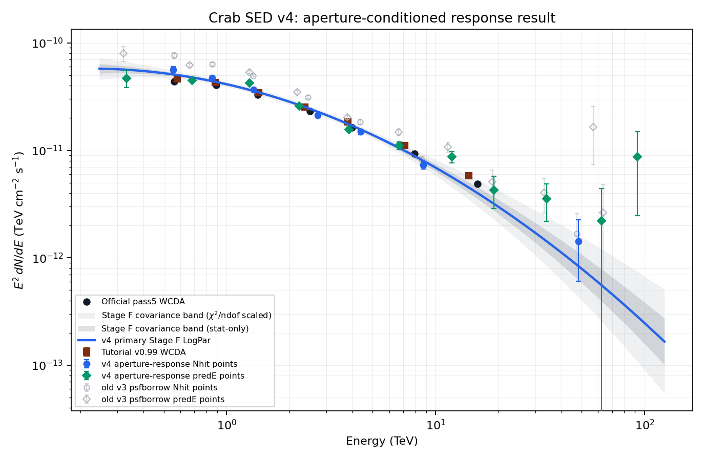
Blue/green markers are the latest annnorm v4 points. Grey open markers are the previous v3 psfborrow points. Black/brown markers are official pass5/tutorial WCDA references.